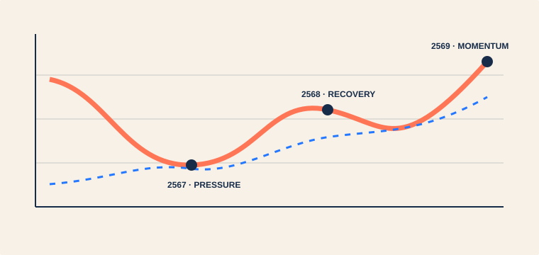
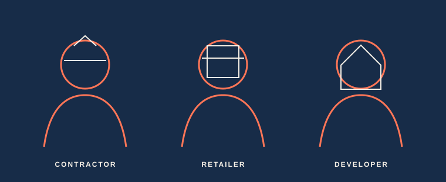
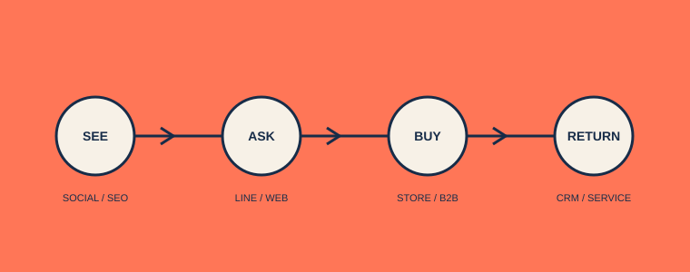
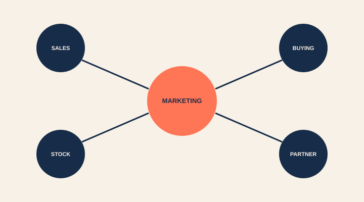

MY MARKETING PITCH · CHIANGMAI MY HOME
ผมอยากช่วย
เปลี่ยนความเชื่อมั่น
ให้เป็นการเติบโต
มุมมองและแผนงานของผู้สมัคร ที่อยากนำจุดแข็งของเชียงใหม่ มายโฮม ไปพบลูกค้าให้มากขึ้น — และวัดผลได้จริง

ROLEMKTMARKETING CANDIDATE
เลื่อนเพื่อเริ่มเรื่องราว ↓
01 / WHAT I LEARNED
MY UNDERSTANDING
ของที่ขายคือวัสดุ
สิ่งที่ลูกค้าซื้อคือความมั่นใจ
ผมมองว่าเชียงใหม่ มายโฮม ไม่ได้เป็นเพียงศูนย์จำหน่ายสินค้า แต่เป็นคนที่ช่วยให้งานของผู้รับเหมา ร้านค้า และเจ้าของโครงการเดินหน้าต่อได้
ก่อตั้ง 2558ศูนย์วัสดุครบวงจรฐานลูกค้า B2Bเติบโตกับภาคเหนือ
02 / MY MARKET READ
WHAT I SEE · 2567—2569
ตลาดไม่ได้หยุด
แค่กำลังเปลี่ยนทิศ
ทรงตัวถึงหดตัว
อสังหาฯ ชะลอ และราคาวัสดุบางกลุ่มปรับลดตามต้นทุน
โครงสร้างพื้นฐานฟื้น
การลงทุนภาครัฐช่วงปี 2568–2569 หนุนปูนและเหล็ก
Omni-channel
เชื่อมหน้าร้าน ดิจิทัล และตลาดโครงการให้เป็นประสบการณ์เดียว

03 / THE OPPORTUNITY
THE GAP I WANT TO CLOSE
สนามใหญ่ขึ้น
และเร็วขึ้น
Modern Trade
ได้เปรียบด้านขนาด เครือข่าย และอำนาจต่อรอง
Direct Sales
ผู้ผลิตเริ่มเข้าถึงผู้รับเหมาขนาดเล็กโดยตรง
Digital Expectation
ลูกค้าคาดหวังข้อมูล ราคา และบริการที่เร็วขึ้น
นี่คือช่องว่างที่ผมอยากเข้ามาช่วยปิด
ทำให้ความสัมพันธ์ + ความเร็ว + ความเข้าใจหน้างาน “มองเห็นและเข้าถึงได้” ในทุกช่องทาง
04 / WHO I WOULD FOCUS ON
3 CORE AUDIENCES
ผมจะไม่สื่อสาร
แบบเดียวกับทุกคน
⌂
01ผู้รับเหมา
มาตรฐานชัด · ของพร้อม · ส่งทัน
▦
02ร้านค้าวัสดุ
ราคาค้าส่ง · ปริมาณ · ความต่อเนื่อง
◇
03เจ้าของโครงการ
ครบวงจร · เชื่อถือได้ · คุมงบ

05 / MY STRATEGIC IDEA
THE BRAND PROMISE
“ครบกว่าแค่สินค้า”
ถ้าผมได้ร่วมทีม ผมอยากทำให้ภาพ “พันธมิตรวัสดุก่อสร้างครบวงจร” ชัดในทุกคอนเทนต์ ทุกแคมเปญ และทุกจุดสัมผัส
MY
HOME
QUALITYคุณภาพSERVICEบริการTRUSTความเชื่อมั่นCHOICEครบทุกหมวด
HOME
06 / HOW I WOULD ACTIVATE IT
ONE CONNECTED JOURNEY
ทุกคอนเทนต์
ต้องพาลูกค้าไปต่อ
FACEBOOKINSTAGRAMLINE OABUILKRAKMAOOFFLINE

07 / IDEAS I WOULD BUILD ON
BUILD FROM WHAT WORKS
ไม่เริ่มจากศูนย์
แต่ต่อยอดสิ่งที่ดีอยู่แล้ว
3rd Anniversary
ราคาพิเศษ ของรางวัล และแรงดึงดูดหน้าร้าน
Rainy Season Set
ถังเก็บน้ำ + ปั๊มน้ำ จับคู่ตามปัญหาจริงของลูกค้า
GreenPlastwood
แคมเปญ 1 แถม 1 ผ่านความร่วมมือกับแบรนด์
TOA Best Partner
รางวัลระดับ Silver ตอกย้ำความน่าเชื่อถือ
08 / HOW I WOULD WORK
ONE TEAM. ONE SCOREBOARD.
ผมจะไม่ทำการตลาด
อยู่คนเดียวในห้อง
SALESเสียงลูกค้า
MARKETINGแคมเปญ + ข้อมูล
PROCUREMENTสินค้า + พันธมิตร
WAREHOUSEความพร้อมส่ง
ยอดขายลูกค้าใหม่ต้นทุนต่อแคมเปญROIซื้อซ้ำ

09 / MY FIRST 90 DAYS
READY TO CONTRIBUTE
90 วันแรก
ผมอยากทำให้เห็นผล
เริ่มจากการเข้าใจทีมและลูกค้า จัดระบบการวัดผล แล้วส่งมอบแคมเปญต้นแบบที่ขยายต่อได้
- DAY 01—30
LISTEN
เข้าใจทีม ลูกค้า ข้อมูล และเส้นทางการขายจริง
- DAY 31—60
BUILD
จัด content pillars, dashboard และแคมเปญต้นแบบ
- DAY 61—90
PROVE
วัดผล ปรับเร็ว และนำเสนอแผนขยายที่มีข้อมูลรองรับ